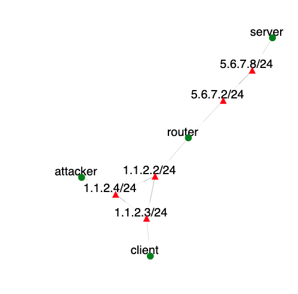

TCP SYN flood
Created by: Jelena Mirkovic, USC/ISI, sunshine@isi.edu.
Overview
This exercise demonstrates a well-known denial-of-service attack, called
TCP SYN flood. Students will be able to create a real attack using SPHERE tools, and to observe its effect on legitimate traffic. Afterwards, they will be asked to apply a known defense against SYN flood known as
SYN cookies, repeat the attack and observe the protection.
This exercise helps students learn the following concepts: (1) How TCP/IP works and how its design can be misused for attacks, (2) How easy it is to perpetrate a DoS attack, with fully legitimate traffic and at a low rate, (3) How easy it is to protect machines from this type of attacks via built-in OS mechanisms. Additionally, extra credit questions improve a student's understanding of how networks and TCP/IP work.
Required Reading
All students should have completed an introductory networking course with grade B or better.
Introduction
Denial of service attacks deny service to legitimate clients by tying up resources at the server with a flood of legiitmate-looking service requests or junk traffic. Before proceeding to the assignment instructions make sure that you understand how TCP SYN flood attack works, which resource it ties up and how, and how syncookies help mitigate this attack.
Assignment Instructions
Setup
- If you don't have an account, follow the instructions here.
- Create an instance of this exercise by following the instructions here, using synflood as Lab name. Your topology will look like below:
.
- After setting up the lab, access your nodes.
Tasks
Generating legitimate traffic
Create a Web traffic stream between the client and the server nodes by writing a script at the client that each second gets index.html from the server. You can for example write this script using bash and curl.
Turning off SYN cookies
SYN cookies are often on by default in Linux and FreeBSD. To check if they are on do the following on
server node:
sudo sysctl net.ipv4.tcp_syncookies
If you see 1 as the result, SYN cookies must be set to zero for the demo to work. Type the following on the
server machine:
sudo sysctl -w net.ipv4.tcp_syncookies=0
sudo sysctl -w net.ipv4.tcp_max_syn_backlog=10000
Verify that SYN cookies are now off by typing on the
server machine:
sudo sysctl net.ipv4.tcp_syncookies
Generating attack traffic
Create a SYN flood between the attacker and the server nodes, using the Flooder tool. You can type "flooder" on the attacker node's command line to get a man page for the tool. For example flooder --dst server --src 1.2.0.0 --srcmask 255.255.0.0 --highrate 100 --proto 6 will send a flood of 100 SYN packets per second to the target called server spoofing addresses from 1.2.0.0/16 range. You should make sure to spoof within 1.1.2.0 range (use mask 255.255.255.0). Most flooder commands require a "sudo" in front.
Collecting statistics
You will now collect
tcpdump statistics on
client machine with and without syncookies, calculate connection duration and draw graphs of connection duration on y-axis and connection start time on x-axis. Perform the following steps:
- Stop all traffic by stopping your legitimate client's script and flooder.
- Start tcpdump on the client
ip route get 5.6.7.8
You should see something like this as a result:
5.6.7.8 via 1.1.2.2 dev eth2 src 1.1.2.3
cache mtu 1500 advmss 1460 metric 10 64
Thus the interface name leading to 5.6.7.8 is eth2. To see the traffic flowing type:
sudo tcpdump -nn -i eth2
then generate some traffic, restart your legitimate client code. You will need to discover proper tcpdump options to see only IP traffic and to save recorded traffic into a file. Start tcpdump with these options.
-
Using a stopwatch perform the following scenario:
- Start legitimate traffic
- After 30 seconds start the attack
- After 120 seconds stop the attack
- After 30 seconds stop the legitimate traffic
- Stop the tcpdump on the client and save the file
- Turn the SYN cookies on and repeat the above steps.
- Using the recorded traffic files and tcpdump to read them, process the output and calculate connection duration for each TCP connection seen in the files.
Connection duration is the difference between the time of the first SYN and of the ACK following a FIN-ACK (or between the first SYN and the first RESET) on a connection. Recall what uniquely identifies a TCP connection, i.e. how to detect packets that belong to the same connection? If a connection did not end with a FIN or a RST, assign to it the duration of 200 s.